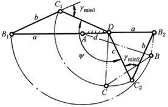
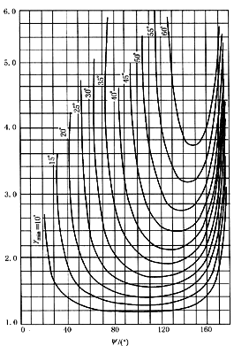
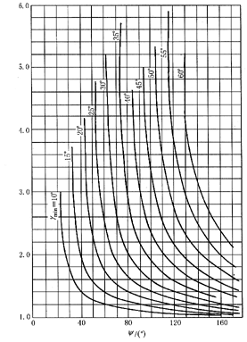
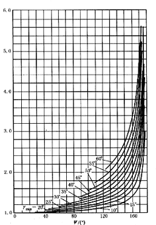

根据最小传动角设计双曲柄机构

如上图表示出双曲柄机构的两个位置AB1C1D及AB2C2D，此时具有两个最小传动角（γmin1,γmin2）。
在这两位置之间输入杆AB转180度，输出杆DC转ψ角度。为了达到最佳传动条件，给定ψ时，要求两个
传动角的最小值相等。按最小传动角设计双曲柄机构时，用下面(a)、(b)、(c)线图分别根据给定的
ψ及γmin值，求得a/d，b/d及c/d三个相对长度值。



(a) (b) (c)
式中：
a ― 输入杆AB的长度；
b ― 连杆BC的长度；
c ― 输出杆CD的长度；
d ― 机架AD的长度；
γmin及ψ见上述。